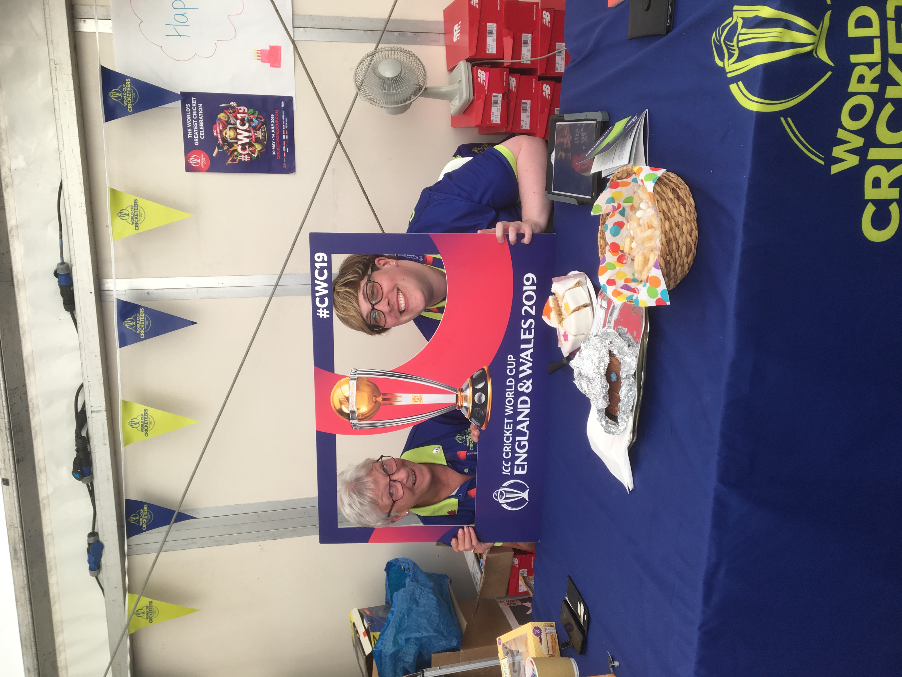

2019
May 2019
The World Taekwondo Championships were on in Manchester in May 2019. I was a volunteer in Accreditation as for the World GP, but hoping it be a little better organised. It had already started better because one of the suggestions we made had been implemented. A small number of us had already been to Taekwondo HQ out by Sportcity to laminate the team passes. It took us most of a day with four laminaters to complete the lot. It turns out the lass in charge, Fran, had been in charge of the accredittion at London 2012, and was a consultant for the Tokyo Olympics. The laminators had been used in London and were proper industrial quality, not the cheap ones we had last time. Fran had basically overruled the World Taekwondo systems peole and we were doing things her way.{kind=link}
The Accreditation Centre was in the Park Inn by Radisson Hotel,a quick walk from Victoria Station up the road from the Manchester Arena. Gillian and Marissa were back to do accreditation pre competition, but transferring to the competition team once the competition actually started. We had a system in operation. I was on the door of the room, with a clipboard telling me which teams had booked appointments, and on which I could note down those teams which just turned up on spec. I was a bouncer to keep the number of people in the room to a manageable number. Once I was ready to let them in,in announced the team name so everyone could get ready. First stop was the guy from GB Taekwondo who was collecting the competition fees. As last time, in cash in dollars, but he was accepting pounds in an emergency. We could direct people around the corner to the ATM machine at the garage.
Next were the World Taekwondo people who checked who was there and who wasnt. Gillian was in charge of getting the teams passes and lanyards in the bag to give to the team manager. Then they had to go to Marissa who played them the national anthem that was going to be played to stop any embarrasing cockup on the podium. Whilst this was going on, the competition volunteers were showing up to collect their accreditation and uniform. There was a slight issue. The shirts had been made in China, and were very small. Everyone had to take at least one size bigger than normal, and the biggest of us had to have the ones that had been altered in Chinatown, an extra panel being added on each side. Jenny was in charge of the computer printing the accreditation on demand, and I was helping on laminating duty if I wasn't being the bouncer on the door. It all worked like clockwork compared to the mess that was last time.
{kind=link}
Things slowed down once competition started as we were dealing with guests and VIPs for the most part. That meant I could go down to the Arena to see where the other volunters were based, and see some competition. The volunteers room was in the bowels of the arena, with no windows and not much room. That wasn't a problem as a lot of people had not shown up for their second shifts and it was all hands to the pumps for the duration of play. I was glad I was up at the hotel. The competition area was quite impressive - six mats in operation at the same time.
I did get to see Jade Jones win her gold medal, and was in the crowd for the controversial Bianca Wallden v Zheng Shuyin match. The Chinese lass was winning 20-10, when Bianca changed tactics and started pushing Zheng out of the ring, which clocks up a penalty. After 10 penalties, the Chinese lass was disqualified. Zheng refused to leave the arena. Boos were raining down from the stands. During the podium presentation, Zheng collapsed and lay prostrate on the top step of the podium. Bloody diva, spoiling things for Bianca. It may not have been pretty, but it was within the rules.
June 2019
 Old Trafford Cricket ground was re-dressed as a Cricket World Cup 2019 venue. I
was a driver again. On match days we worked either an early shift, which tended to start at 6am to pick up people after breakfast and take
them to the ground, or a late shift where we would take them back to their hotels etc. An early shift tended to be really busy to start, but
once the match was underway we rarely had any trips, so we could sit in the volunteer tent and watch the match on the TV. We could hear the
crowd reaction a second or two before it was on the screen, so knew when to check out the TV action.
A late shift started off watching the game on the TV, and got busy as soon as the match finished. The shift finish time varied, depending on
how long the match went on. Our meal was a mobile one - sandwiches, crisps, fruit, a chocolate bar and a drink - to take with us at our hotel
waiting spot, but we could usually get a hot meal as well, which the other volunteers were getting who were working the full day at the
ground.
Old Trafford Cricket ground was re-dressed as a Cricket World Cup 2019 venue. I
was a driver again. On match days we worked either an early shift, which tended to start at 6am to pick up people after breakfast and take
them to the ground, or a late shift where we would take them back to their hotels etc. An early shift tended to be really busy to start, but
once the match was underway we rarely had any trips, so we could sit in the volunteer tent and watch the match on the TV. We could hear the
crowd reaction a second or two before it was on the screen, so knew when to check out the TV action.
A late shift started off watching the game on the TV, and got busy as soon as the match finished. The shift finish time varied, depending on
how long the match went on. Our meal was a mobile one - sandwiches, crisps, fruit, a chocolate bar and a drink - to take with us at our hotel
waiting spot, but we could usually get a hot meal as well, which the other volunteers were getting who were working the full day at the
ground.My team of drivers was very different from any volunteer group I've been involved with before. I was one of only two women, and the vast majority of the guys were from families originally from the Asian sub-continent. A lot of them were only there to watch the cricket. When the India and Pakistan teams arrived to practice, the guys were most put out that they culdn't go in the ground to watch. Some of them we never saw again. Val, who was manning the Workforce desk, and Adele (from Sale Sharks), who was a matchday volunteer, told me that some of their people had been sent home having had their accreditation revoked, because they were watching the cricket in the stand and refused to leave. Security had to be called to remove them.
The teams were travelling to and from the grounds in their team buses, but we were picking up friends and family, media people and VIP guests. Our first match at Old Trafford was a Sunday match between India and Pakistan . The hype before the match was huge, and the atmosphere on match day was unbelievable. I was positioned outside The Lowry Hotel, and picked up a couple of Indian ladies who actually lived in Dubai. Their conversations was a strange mix of Hindi and Anglo-Saxon english, and they didn't have a nice thing to say about anybody - friends, family or anyone. We crawled to the ground. We had been told on pain of death, not to stop outside the main gates by the VIP entrance, because the traffic wardens were taking no prisoners, and we would be liable for any tickets ourselves. I told my ladies I couldn't let them out, but the car in front of me stopped to not hit some pedestrians, and they were getting out of the back of the car before I could stop them. I just about escaped without a ticket. All other shifts I made sure the back door locks were on!
 Not all the media types were being driven by us. Sachin Tendulkar, who is tiny, was driving himself, and when he was spotted by the Indian fans, I thought a riot was going to break out. I did get to do the TV person run from the Malmaison a couple of times, and actually recognised some of the people I had in the back of my car for the first time ever. The ex-Indian cricketer Sanjay Manjreker was travelling with Joanna Lowndes Lumb and Huw Bevan from the TV production company. I did have to look up who Mpumelelo "Pommie" Mbangwa was, who was travelling wih Mark Nicholas. Turns out he's an ex-Zimbabwean cricketer.
{kind=link}
We also worked the day before a match, and the day after a match, when, for the most part we stood or sat around outside the various official hotels, waiting to see if anyone wanted to go anywhere. There was one exceptional shift for me however. On a Sunday morning, Ian, our transport manager assigned me to pick up Shashank Manohar and family from the Radisson Blue Hotel, and and take them whereever they wanted to go. I arrived at 9.15 for my 9.30 pick up and found a spot to park in the small bay outside the hotel. I had to leave space for the unloading of the Indian team luggage from a gey van, which had come from Leeds. Virat Kohli came out to greet his arriving girlfriend.
I googled Mr Manohar and discovered he was the International Cricket Council (ICC) Chairman. He, his wife and PA finally mde their way out to me and 10am. I asked them where they wanted to go, and they said were do you suggest. I asked them what sort of thing they wanted to see, and they said something we wouldn't see in Dubai. As the Cathedral would be busy with a Sunday service I did a bit of quick thinking, and drove them to Buxton. The well dressing festival was on that weekend, so I pretended that was one of the reasons I had chosen Buxton. I dropped them by the Opera House, and parked up at the top of town. Three hours later, they phoned to say they were ready to be picked up. Mrs Manohar had been wool shopping and seemed pleased with her purchases. The next day, a fellow driver ended up taking her, on her own to the Lake District!
July 2019
Oddsocks were back at Gawsworth Hall, this time with A Midsummer's Night Dream . A reviewer described it thus "If William Shakespeare wrote pantomimes, this is the sort of production you'd expect to see. The cast interact with the audience, with one man being employed as 'the wall', and woe betide anyone who dared to arrive late or go to the toilet while the play was on,as you will be highlighted by whichever cast member spots you! All additional fun for the rest of the audience." As ever it was very funny and very topical.I missed the final match at Old Trafford, the semi-final, because it had been delayed a day due to rain, and I had to start my first shift at the Netball World Cup in Liverpool. This was being held at the M&S Bank Arena at the King's Dock on the waterfront. I was in the operations team, which basically meant we had to do whatever needed doing to keep the show on the road. Day 1 started with a shopping trip. Sarah, one of the drivers, and I had to find DIY shops that were selling battery operated strip lights which could be put on the back on the temporary stands, as it was very dark in that part of the Arena. I learned that Liverpool City Centre has changed enormously from when I lived there. I kept saying "that wasn't there before".
{kind=link}
Next, we had to lug the lockers from the loading bay to the press office, remove all the stickers to tidy them up, and them match the keys to the locker. On the other days we had to laminate signs and stick them up around the competition area, lug Tensa barriers to the competition area and erect them around the press boxes, carry flower arrangements, bowls full of water and floating flowers, from the loading bay, where they had been delivered incorrectly, into the hospitality rooms, take boxes of Jaffa oranges from the loading bay to the competition storage room, and collect water bottles from the next door building and deliver them to the teams changing rooms area. I spend one shift on the first day of competition after the opening ceremony,as part of the access control team, who were short handed. That meant I was bouncer on the doors into the arena, and able to watch some of the games from close to court side, depending on which door I was on. The central doors were used by the teams, and I suddenly realised quite how tall the average netball player is as they filled into the arena passed me. The opening ceremony was unique in that there were no flags carried in front of the teams, but there were ladies dressed up like they were wearing the team's flag.
We also spent time as foam hand wavers as part of the Spectator Services team. Again, the volunteer team make up was very different from revious roles. Most were netball fans/players and were almost exclusively female, and in the case of Wendy, manic. The rest of us were just sports volunteers (including Maureen from MCRVIP), so a few more guys were involved. The spectators were also predominantly female. Huge queues for the ladies, but the guys could just stroll in. For the English Roses matches, I was happy to concede the indoor spectator spots to the netball fans amonst the volunters. I can take or leave live netball. When the game flows from end to end, it is graceful, almost balletic, but most of the time, there is so much physical contact and infringements, that the whistle blows not stop and everything is stop/start. The Roses bottled it in the semi-finals, but rallied to beat South Africa to the bronze. New Zealand played Australia in the final, and evetyone but the Aussies were pleased that the Kiwis took home the trophy.
August 2019
As I was driving to work on August 4th, it was peeing down with rain, and it had been all night. On the A555 airport road, as I approached the bridge that goes over the road at the end of Handforth, there was a big pudddle in the road. It wasn't until I got close up that I realised that this was a really big puddle. I slowed down and got out the other side without flooding the engine, but it wasn't a pleasant experience. Going home, the road was shut due to flooding. I went out to have a look at the aftermath, to find someone hadn't made it out the other side. The road was shut for several days to clear up the mess.{kind=link}
September 2019
Old Trafford was still sporting a few of the CWC19 signs when the 4th Ashes Test came around in September, and also had a David to promote positive male body issues. The temperatures were as expected in September - cold for cricket. Rain at the start of day two meant they replayed the highlights of England winning the World Cup final which was a fantastic communal experience as we huddled together for warmth and rain protection under Stand B. Did get a phone call from Sue to tell me Mum had a pair of black eyes when she picked her up to go to the hairdresser, but Mum wasn't sure how it had happened. By the time I got home to Barry at the weekend, the bruising had died down but was still visible.The end of September saw me volunteering at the World Road Race Championships, based in Harrogate. The first shift was actually in Tadcaster at the 2nd of three starts for the Yorkshire 2019 Para-Cycling International race which was the first time para-cycling races had ever been held alongside an able-bodied event and finished on the same line as the Road World Championships. It was a glorious sunny day. Dame Sarah Storey was at our starting point. Our main task was ushering the contestants from their warm up area (Sainsbury's Car Park) across the main road, where the starters from the 1st start were already coming through, to their starting line.
The next three days I was based with the Tissot Timing people at the finishing line in Harrogate. Travelled there by train parking up the car, with no issues, at Stalybridge Station, changimg in Leeds, to check in at our Volunteers room, which was the Wesley Methodist Chapel . The first race was the inaugural mixed team time trial. Two of us Tissot volunteers were sent out to the area where the team cars came through having been funnelled off the course, to join two others from the finishing line team. The other two had to remove the team sign from the front of each of the two cars. We hadto step in once the second car arrived and collect the two GPS tracking devices. We had to keep trak of who hadn't cone through as they had to pay for any device not returned. We never saw the 2nd Spanish car.
 The next day had two races, Junior Women followe by Junior Men. This time the team were on duty at the end of the
Mixed Zone press tent. The cyclist, having crossed the finish line had to walk the length of the Mixed Zone in case anyone wanted to interview them. Before they left,
we had to collect the timing device from the front wheel of the bike. Each one was fastened in a different manner in a different location.
I had to note which we collected and which were missing. A lot of the cyclists, having crashed, had taken a spare bike which did not have
a device to collect. The following day, there were two more races, the Under 23 men and the Elie Women. Our task was the same, but it was
peeing with rain all day. They had to close the Fan Zone due to the quagmire, and there were even more crashes. We did get to wander up
the finishing straight, the wrong way, past
Claire Balding, to get back to the volunteer room.
The next day had two races, Junior Women followe by Junior Men. This time the team were on duty at the end of the
Mixed Zone press tent. The cyclist, having crossed the finish line had to walk the length of the Mixed Zone in case anyone wanted to interview them. Before they left,
we had to collect the timing device from the front wheel of the bike. Each one was fastened in a different manner in a different location.
I had to note which we collected and which were missing. A lot of the cyclists, having crashed, had taken a spare bike which did not have
a device to collect. The following day, there were two more races, the Under 23 men and the Elie Women. Our task was the same, but it was
peeing with rain all day. They had to close the Fan Zone due to the quagmire, and there were even more crashes. We did get to wander up
the finishing straight, the wrong way, past
Claire Balding, to get back to the volunteer room.My final day was a completely different experience. I was sent out to help at the 2nd intermediate timing spot on the Men's Elite Time trial route. It was out in the middle of nowhere between Northallerton and Harrogate with a farm name as my target location. It was so far off the beaten track, the GPS Sat Nav signal kept disappearing. I eventually spotted the Tissot man and parked up. They were building the camera podium Heath Robinson fashion, lashing together whatever kit they could find, as the requested podium had been erected on the wrong side of the road. As a result, the Tissot man had to move the timing equipment further down the road, so the camera could see the cyclists passing it. It meant I had to stand knee deep in grass, partly in the hedge on the side of the road, instead of by the farm entrance.
My job was to be on the phone, using What's App, to the volunteer who had come over from Norway, who was in the finishing line timing box in Harrogate. I had to confirm that a cyclist was approaching. Then as their front wheel crossed the timing line on the road, I had to say now as I pressed a button which was connected to the timing equipment. I then had to quickly confirm the race number on the back of the cyclist. I was the back up timing for those cyclists who had already crashed or changed bikes and no longer had the GPS device on their wheel. When I watched the TV replay when I got home, I could be seen talking away on my phone. I really, really enjoyed the day. Something other than Spectator services.